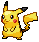
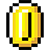
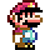
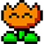
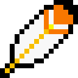

Cours
F.A.Q

À propos
Range ta chambre est un jeu en drag & drop de classification dans des oeuvres marquantes de l'univers geek. Le principe du jeu est de trier une quantité d'objets, allant du manga au jeux-vidéo en passant par le cinéma de science-fictionn, permettant de tester et développer ses connaissances dans ce domaine.
Comment jouer ?
Kévin a laissé un bazar monstre dans sa chambre et ses parents rentre bientôt de week-End. Aidez-le à ranger le plus vite possible tous les objets qui jonchent le sol avant que ses parents reviennent !
Pour remporter la partie, déplacez chaque objet à l'aide de la souris dans le carton qui lui correspond. Chaque partie est minuté et le meilleur temps de jeu est à retrouver sur la page profil.
Bonus: Des objets qui ne font pas partie de l'univers geek se cachent dans le jeu, ils sont à déplacer dans la corbeille bien sûr ! ;)
Wiki
Classé par thèmes, vous pouvez retrouver ci-dessous un ensemble non-exhaustif d'objets présents dans le jeu relatifs à des oeuvres majeurs de la culture populaire geek.
-

Poké Ball
La Poké Ball correspond à la Ball de base servant à capturer des Pokémon. Son Bonus Ball est de 1 (le plus bas Bonus Ball pour une Ball). Le joueur peut en obtenir 5 (10 à partir de Pokémon Noir et Blanc) dans toutes les versions de jeux Pokémon auprès de l'assistant du Professeur en début de quête. Elle se vend ensuite dans beaucoup de magasins au prix de 200 Pokédollar.
À partir de la troisième génération, si 10 Poké Balls ou plus sont achetées d'un coup, le vendeur offre une Honor Ball au joueur. Contrairement à ce que l'on pourrait penser, une simple Poké Ball peut suffire pour attraper n'importe quel Pokémon, même si c'est plus difficile.
-

Super Ball
La Super Ball est une Ball qui permet au joueur d'attraper un Pokémon sauvage; elle est plus puissante qu'une Poké Ball.
Son Bonus Ball est de 1.5 (légèrement plus haut qu'une Poké Ball). Elle peut être achetée dans la plupart des magasins au prix de 600 Pokédollar.
-

Master Ball
La Master Ball est une Ball qui permet d'attraper n'importe quel Pokémon sauvage rencontré à coup sûr. Son Bonus Ball est de 255 (le Pokémon est capturé à coup sûr).
La Master Ball ne peut pas être achetée. Elle est donnée à raison d'un exemplaire dans une partie. (sauf dans Pokémon Noir et Blanc où il est possible d'en obtenir une seconde en ayant fait 50 échanges avec des joueurs différents, et Pokémon Noir et Blanc 2 donnée par Nikolaï après l'avoir battu une seconde fois.). La Master Ball est développée par la Sylphe SARL.

Gobou
Gobou (anglais : Mudkip ; japonais : ミズゴロウ Mizugorou) est le Pokémon de départ de type Eau de la troisième génération.
Gobou est le parfait exemple de pokémon amphibien. Dans l'eau, il respire avec les grosses branchies orange de ses joues, se comportant ainsi comme un poisson. Par contre, sur la terre ferme, il respire comme un être humain : il possède ainsi plusieurs systèmes de respiration. Son appendice sur sa tête est en réalité un radar extrêmement précis qui ressent les moindres ondes de l'eau, déterminant le sens du courant, sa température et également les agitations de l'air. Ca système de radar est actif même pendant son sommeil, le réveillant s'il sent le moindre danger.

Salamèche
Salamèche (anglais: Charmander ; japonais: ヒトカゲ Hitokage) est le Pokémon de départ de type Feu offert par le Professeur Chen dans Pokémon Rouge, Bleu, Rouge Feu et Vert Feuille.
Salamèche est un Pokémon bipède et reptilien avec un corps orange, tandis que son ventre et la plante de ses pieds sont couleur crème. Il a deux crocs visibles sur sa mâchoire supérieure ainsi qu'inférieure et deux yeux bleus. Ses bras et ses jambes sont courts, avec respectivement quatre doigts et trois griffes chacune. Une flamme brûle au bout de la svelte queue de Salamèche, et elle flamboie depuis sa naissance.

Carapuce
Carapuce (anglais : Squirtle ; japonais : ゼニガメ Zenigame) est le Pokémon de départ Eau de la première génération.
Carapuce est une petite tortue de couleur bleue. Il possède une carapace brune et jaune pâle au niveau du ventre. Il a une grande queue bleue se terminant par un motif de spirale. Les bébés Carapuce sont extrêmement vulnérables à la naissance, car leur carapace est toute molle. C'est pourquoi ils boivent régulièrement une eau riche en minéraux. Elle devient ensuite dure comme de la pierre. S'il est menacé, il se réfugie à l'intérieur et envoie un jet d'eau à son agresseur.
Pikachu
Pikachu (anglais : Pikachu ; japonais : ピカチュウ Pikachu) est un Pokémon Souris de type Électrique apparu dès la première génération. En tant que partenaire de Sacha, héros du dessin animé tiré du jeu, il est le plus célèbre des Pokémon et la mascotte officielle de la licence.
Pikachu est un petit Pokémon potelé qui ressemble à un rongeur. Il est couvert de fourrure jaune. Ses oreilles sont pointues et leurs bouts sont noirs. Il a une petite bouche, des yeux marron et deux cercles rouges sur les joues. Il y a des poches sous ses joues qui génèrent de l'électricité. Ses bras sont courts, avec cinq doigts chacun, et ses pieds possèdent trois orteils.
-

Kenny
Kenneth McCormick, dit Kenny1 (parfois orthographié McKormick), est un protagoniste de la série télévisée South Park. Kenny est un des personnages principaux de la série, à l'instar de Stan Marsh, Kyle Broflovski et Eric Cartman.
Sa voie assourdie et inaudible (à cause de la capuche de son anorak, recouvrant sa bouche et la moitié de son visage) est jouée par Matt Stone, co-créateur de South Park. Le téléspectateur ne saisit pas la majorité de ses paroles, néanmoins les personnages de la série semblent le comprendre sans trop de difficulté.
-

Stan
Stanley « Stan » Randall Marsh est un personnage de la série télévisée d'animation South Park. Il est doublé par Trey Parker dans la version originale, de qui il est d'ailleurs inspiré ; par Thierry Wermuth dans la version française, ainsi que par Xavier Dolan dans la version québecoise.
Stan est un des quatre personnages principaux de South Park, avec Kyle Broflovski, Eric Cartman et Kenny McCormick. Il a débuté à la télévision lors de la diffusion, le 13 août 1997, du premier épisode de South Park, Cartman a une sonde anale ; après être déjà apparu dans les deux courts-métrages L'Esprit de Noël, en 1992 (Jesus Vs. Frosty) et 1995 (Jesus Vs. Santa), réalisés par Trey Parker et Matt Stone, les créateurs de la série.
-

Kyle
Kyle Broflovski est un des personnages principaux de la série télévisée d'animation South Park. Il est doublé par Matt Stone dans la version originale et par William Coryn dans la version française.
Kyle est un des quatre personnages principaux de South Park, avec Stan Marsh, Eric Cartman et Kenny McCormick.
-

Cartman
Eric Théodore Cartmane 1 est un des personnages principaux de la série télévisée d'animation South Park. Il est doublé par Trey Parker dans la version originale, par Christophe Lemoine dans la version française, ainsi que par Nicholas Savard L'Herbier dans la version québécoise.
-

Pièce
Contrairement à ce qu'on pense, les Pièces ne sont pas la monnaie des jeux Mario (pas les pièces normales), elles servent juste d'objet à ramasser mais elles donnent des pouvoirs à ceux qui en prennent beaucoup (vie, accélération). Dans la série Paper Mario les pièces servent à acheter des items (Fleur de Feu, Bloc POW...) ou des Badges mais c'est un cas unique.
-

Super Champignon
Le Super Champignon ou Super Champi est l'objet principal des séries Super Mario. Il est rouge avec des pois blancs. Dans les séries Super Mario Bros., il fait grandir celui qui l'attrape mais dans les séries Mario Kart, il donne plus de vitesse, tandis que dans les séries Mario & Luigi et Paper Mario, il rend des PV (Points de Vie). Avec le Champignon 1UP, c'est le premier item de la série Super Mario Bros.. Il a un opposée : le Champignon Poison qui lui ressemble beaucoup. La seule différence, c'est que le Champignon Poison, lui, à les yeux en colères.
Le Super Champignon apparaît pour la première fois dans ce jeu. C'est l'un des items les plus répandus. Quand Mario le touche, il devient grand. Quand il touche un bloc là ou il y a normalement un Super Champignon cette fois c'est une Fleur de Feu qui apparaît. Super Mario a l’habilité de casser les blocs mais une fois qu'un ennemi le touche, il redevient petit.
-

Paper Mario
Paper Mario (Mario Story au Japon) est un jeu de rôle développé par Intelligent Systems et édité par Nintendo, sorti en 2000 sur Nintendo 64, puis en 2007 sur la Console virtuelle de la Wii et en 2015 sur celle de la Wii U.
Il met en scène un gameplay mélangeant les jeux de rôle japonais et l'univers classique du plombier moustachu, où tous les personnages et environnements sont en papier. C'est le premier opus de la série qui porte son nom.
-

Fleur de feu
La Fleur de Feu est un des items les plus récurrents de la série Super Mario. Elle apparaît la première fois dans le célèbre jeu de Mario, Super Mario Bros. sur NES. Elle permet à Mario de se transformer en Mario de feu et lui permettant de lancer des boules de feu. Il existe une autre fleur, la Fleur de Glace, plus récente. C'est le troisième bonus inventé dans les jeux Mario, et c'est l'objet le plus connu après l'Étoile
La Fleur de Feu est jaune contournée de orange et de rouge, comme la Fleur de Glace sa tige est verte et a deux feuilles.
-

Plume
La Plume est un objet apparu dans Super Mario World où il donnait la superbe transformation Mario Cape. Il n'est que réaparu dans Super Mario 64 DS puis fut oublié.
La Plume est un objet récurrent de Super Mario World, il permet à Mario de se transformer en Mario Cape et donc de pouvoir survoler les horizons. On peut voir qu'il y a certains ennemis qui possèdent cette transformation comme les Koopas. Il ressemble un peu à la Super Feuille qui donner à peu près le même effet.